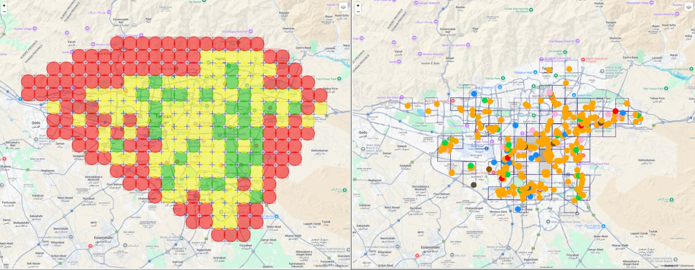
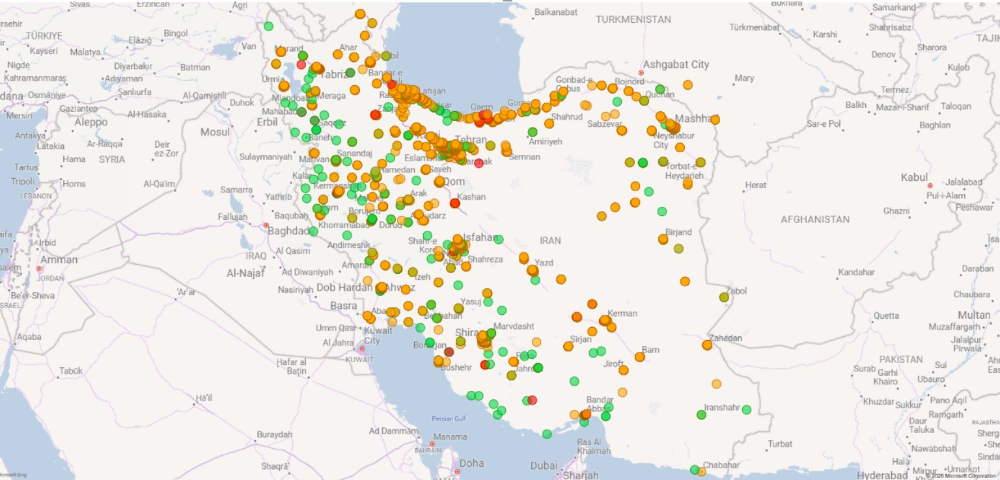
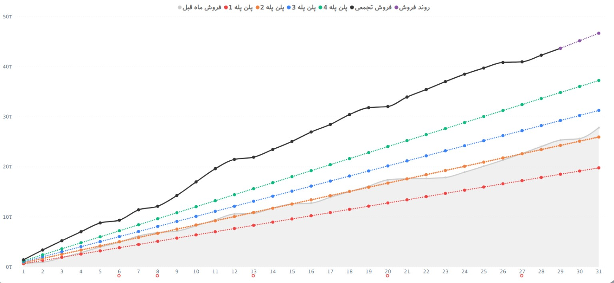
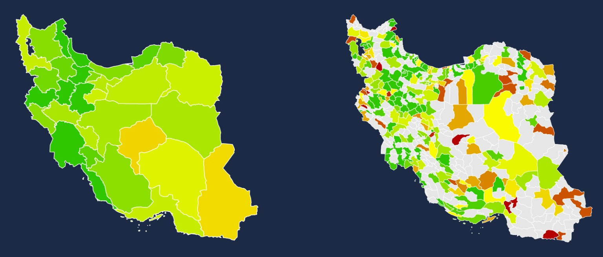

Business Strategy
Strategic planning, business diagnosis, roadmaps, OKRs and performance architecture.
BUSINESS STRATEGY & DEVELOPMENT
I work at the intersection of business strategy, business development, data and technology — turning complex business questions into structured decisions, measurable systems and scalable growth.
My work starts with a business problem, not a tool. I combine strategic thinking with analytical systems to understand where value is created, where performance is lost, and what needs to change.
Strategic planning, business diagnosis, roadmaps, OKRs and performance architecture.
New revenue streams, market opportunities, B2B growth and commercial models.
Business models, operating systems, franchise concepts and execution frameworks.
Store performance, target planning, market potential and network development.
GIS analysis, location scoring, geographic diagnosis and retail expansion.
Dashboards, analytical databases, monitoring systems and AI-enabled decision support.
A practical strategy loop that connects diagnosis to execution.
Selected examples of strategy, retail planning and location intelligence work represented through real project visuals.
CASE 01
Designing analytical tools for geographic diagnosis and retail / franchise location development across the country.


CASE 02
A network-level view of retail footprint, geographic coverage and performance signals — connecting individual locations to a national expansion logic.

CASE 03
Structured sales plans and performance tracking across multiple target levels.

CASE 04
Connecting regional market signals with store-level development decisions.
From building a tourism search business to working on B2B growth and nationwide retail strategy.
Entekhab Sales Holding (Shatab)
Business diagnosis · B2B sales structure · retail/franchise roadmap · city OKRs · product roadmaps · GIS & location intelligenceEntekhab Investment Development Group
Sales strategy · market research · retail development · franchise concept · credit & installment model · holding KPI monitoringMrBilit — B2B
Value-chain diagnosis · KPI & OKR · organizational sales · CRM · new revenue streams · TravelCard growthDadeh Nemaye Vira / Radar361
Tourism search engine · B2B business model · reputation management · revenue model · product & go-to-marketIran University of Science & Technology · E-Business
GPA 18.5 · Distinguished studentUniversity of Kashan
1393 — 1397I entered the IT world in 2019, driven by an interest in entrepreneurship and building products. I co-founded a tourism search business, then moved toward B2B after discovering a stronger market opportunity.
Over the years, product work became a foundation for how I think about businesses: start with the customer and the problem, understand the economics, design the system, and make the outcome measurable.
Today, my focus sits closer to strategy and business development — especially where retail, data, geography and technology meet.
I’m especially interested in the next layer of business intelligence: combining BI, GIS and AI agents to move from reporting what happened to helping teams decide what to do next.
LET'S CONNECT